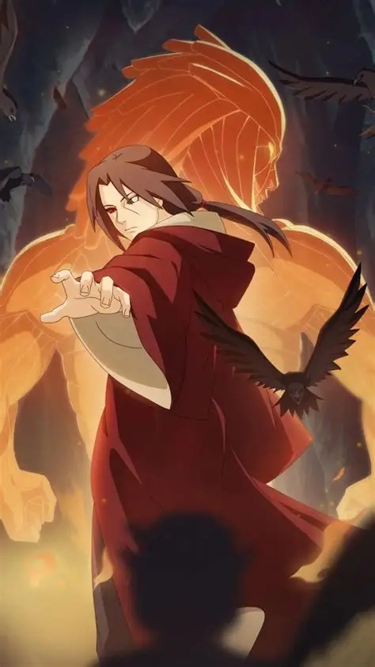

宇智波鼬，木叶宇智波一族天才忍者，忍界顶尖幻术大师，心思深沉谋略无双，是背负一切罪孽与误解的悲情英雄。
一、年少奇才 心智过人
自幼拥有超凡天赋与远超常人的成熟心智，小小年纪便看透战争残酷与忍界黑暗。
年少开启写轮眼，精通火遁、幻术、体术全方面忍术，学习能力冠绝同族。
年纪轻轻便进入木叶暗部执行机密任务，行事冷静沉稳，大局观极强。
早早看清族群与村子之间的矛盾，深知内乱爆发会带来无尽灾难。
二、族群动荡 身陷两难
宇智波一族长期遭受木叶高层猜忌排挤，族人心中积怨日益加深，萌生谋反之心。
一边是血脉相连的全族亲人，一边是养育自己的木叶村落，鼬陷入极致两难境地。
他深知一旦家族起兵造反，必定引发内战，导致木叶元气大伤，外敌也会趁机入侵。
为保全大局，他被迫接受高层下达的秘密指令，独自承担起灭族的沉重任务。
三、忍痛灭族 背负骂名
为保住唯一的弟弟宇智波佐助，鼬连夜亲手肃清整个宇智波一族。
亲手终结所有族人性命，将所有血腥与罪孽全部揽在自己身上。
事后刻意伪装成冷酷无情的叛忍，主动离开木叶，加入晓组织隐藏身份。
故意在佐助心中埋下极致仇恨，让弟弟以杀死自己为目标拼命修炼成长。
从此沦为全忍界唾骂的灭族罪人，独自承受无尽非议与孤独。
四、潜伏晓组织 暗中制衡
加入晓组织后，表面听从组织安排执行任务，实则暗中牵制晓组织势力。
凭借强大实力与高超智谋，暗中阻止晓组织做出危害木叶的重大举动。
时刻暗中关注弟弟佐助的成长，默默扫清所有威胁佐助性命的敌人。
游走各方势力之间，周旋算计，默默为木叶消除诸多潜在危机。
身患重病身体日渐衰败，依旧强忍病痛坚守计划，从未有过半分松懈。
五、宿命之战 安然落幕
多年之后主动选择与弟弟佐助展开宿命对决，全程刻意放水隐藏实力。
耗尽自身最后力气完成整场战斗，在生命最后一刻完成所有布局。
临终前将别天神之力注入佐助眼中，同时留下守护木叶的最后后手。
用尽一生谋划，只为让弟弟安稳活下去，彻底摆脱仇恨安稳前行。
六、秽土重生 解开真相
第四次忍界大战被药师兜以秽土转生之术复活，再度重返忍界战场。
复活后依旧保持清醒心智，不受操控，一心寻找破解秽土转生之法。
途中与弟弟佐助再度相遇，终于将当年灭族的全部真相全盘说出。
多年的误会尽数解开，佐助终于知晓兄长一生所有隐忍与无尽牺牲。
兄弟二人短暂并肩作战，联手对抗强敌，弥补过往所有遗憾。
七、挣脱束缚 灵魂远去
凭借超强幻术与智谋，成功找到并说服药师兜解除秽土转生之术。
术式解除之际，鼬望着弟弟放下所有牵挂，内心再无遗憾。
一生从未为自己活过，所有选择皆为村子、家族与至亲之人。
世人皆骂他冷酷无情，唯有至亲之人知晓他藏在心底的万般温柔。
八、人物信条
忍者之所以为忍者，就是因为时常在隐忍中活着。